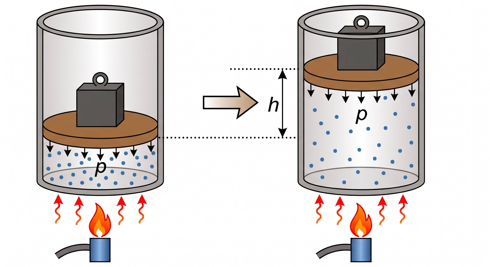
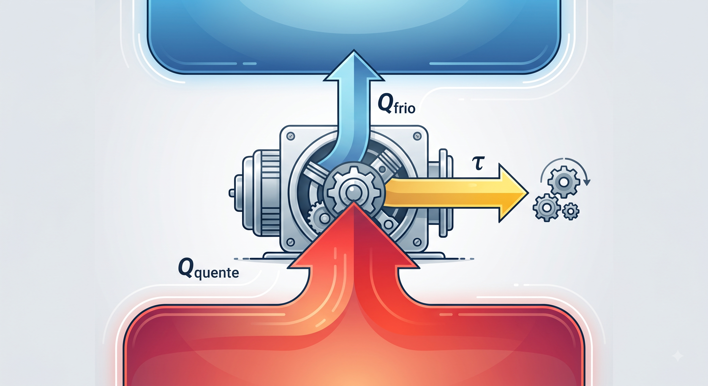

100kg
Transformação de Calor em Trabalho
Produzido por Flávio E. S. da Cunha | flavioescunha@gmail.com | Agosto de 2026
Ao receber calor, o gás (vapor d'água) dilata e empurra o peso em cima do êmbolo que o está aprisionando no cilindro. Clique no fole para soprar o fogo e acelerar esse processo!
Veja como calcular o trabalho realizado por um gás ao receber calor:

O princípio da conservação de energia aplicado aos gases.
Nenhuma máquina térmica possui 100% de rendimento.
Resumo do Funcionamento: A máquina extrai calor da fonte quente, converte parte em trabalho e rejeita o resto para a fonte fria.

Um gás perfeito sofre uma expansão e seu volume aumenta de 2 m³ para 5 m³ sob uma pressão constante de 200 N/m². Qual foi o trabalho (τ) realizado pelo gás?
Resolução:
Fórmula do trabalho a pressão constante: τ = p · ΔV
1. O gás aumentou o volume, logo: ΔV = 5 - 2 = 3 m³
2. Substituindo os valores:
τ = 200 · 3
τ = 600 Joules
Um gás ideal recebe 1000 Joules de calor (Q) de uma fonte térmica e, ao se expandir, realiza um trabalho (τ) de 400 Joules. Qual foi a variação da sua Energia Interna (ΔU)?
Resolução:
A 1ª Lei diz que o saldo é o que entra menos o que sai: ΔU = Q - τ
1. Energia que entrou (Calor): 1000 J
2. Energia gasta para expandir (Trabalho): 400 J
Substituindo os valores:
ΔU = 1000 - 400
ΔU = 600 Joules
(O saldo de energia interna do gás aumentou em 600 Joules!)
Uma máquina térmica recebe 5000 Joules de calor da sua caldeira (Fonte Quente). No entanto, apenas 2000 Joules são convertidos em trabalho útil (o resto se perdeu). Qual é o rendimento (η) dessa máquina?
Resolução:
O rendimento é a porcentagem da energia que virou trabalho útil: η = τ / Qquente
Substituindo os valores:
η = 2000 / 5000
η = 0.4
Para transformar em porcentagem, multiplicamos por 100:
η = 40%
(Essa máquina aproveita apenas 40% da energia do fogo. Os outros 60% se perdem como calor para o ambiente!)